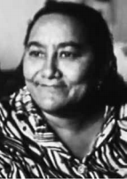

A Infância nos Canaviais e a Defesa da Escola
O combate ao trabalho precoce de crianças e adolescentes nos eitos de cana articulou a fiscalização trabalhista com a criação de salas de alfabetização popular em Alagoa Grande.
A Própria Memória da Infância Interrompida
A determinação de Margarida Alves contra o trabalho infantil tinha raízes em sua própria história de vida. Filha de camponeses no Sítio Jacu, em Alagoa Grande, Margarida ingressou na lavoura aos oito anos de idade para ajudar os pais e seus oito irmãos na lida da terra sob o regime de cambão.
A necessidade do trabalho braçal diário impediu seu acesso à escola formal na idade regular. Demonstrando perseverança singular, ela só conseguiu concluir a 4ª série do Ensino Fundamental já na fase adulta, após conciliar o casamento, o trabalho e os primeiros anos de militância comunitária.
O Mecanismo dos "Ajudantes de Tarefa" nas Usinas
Nas propriedades canavieiras do Brejo Paraibano, meninos e meninas entre 8 e 14 anos eram rotineiramente empregados como ajudantes de corte ou no enfeixamento das hastes da cana. Como as usinas pagavam pelo peso total entregue na balança, os pais levavam os filhos para o eito como forma de aumentar a metragem cortada.
Essa prática transferia o custo da produção para as crianças, submetendo-as a cortes acidentais de facão, exaustão térmica e contato com defensivos agrícolas, mantendo as taxas de analfabetismo infantil no meio rural acima de 70% na década de 1970.
Fiscalização Sindical e a Pedagogia do CENTRU
Sob a presidência de Margarida, o STR passou a denunciar aos fiscais do Ministério do Trabalho a presença de menores nos canaviais da Usina Tanques e de engenhos do "Grupo da Várzea", exigindo a proibição formal do trabalho infantil nas convenções e acordos coletivos.
Simultaneamente, Margarida aliou-se a educadores populares e a Manuel da Conceição na fundação do CENTRU (Centro de Educação e Cultura do Trabalhador Rural) em 1980. O sindicato organizou salas de aula comunitárias inspiradas no método de Paulo Freire, pressionando os órgãos públicos por vagas escolares e assegurando que os filhos dos trabalhadores tivessem garantido o direito à formação básica.
